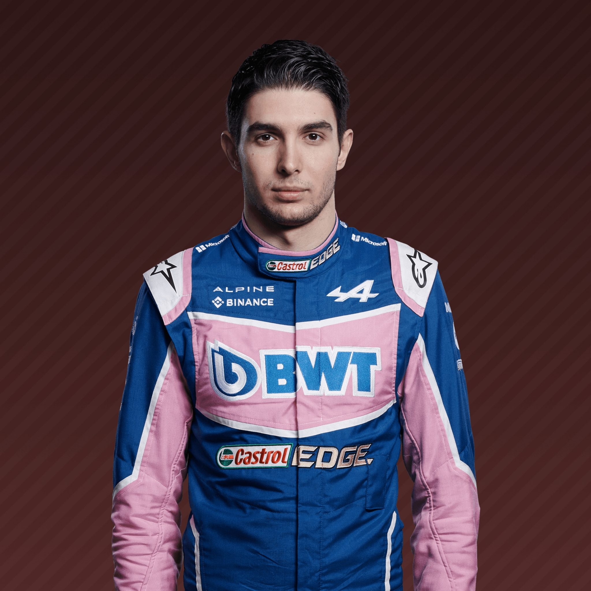
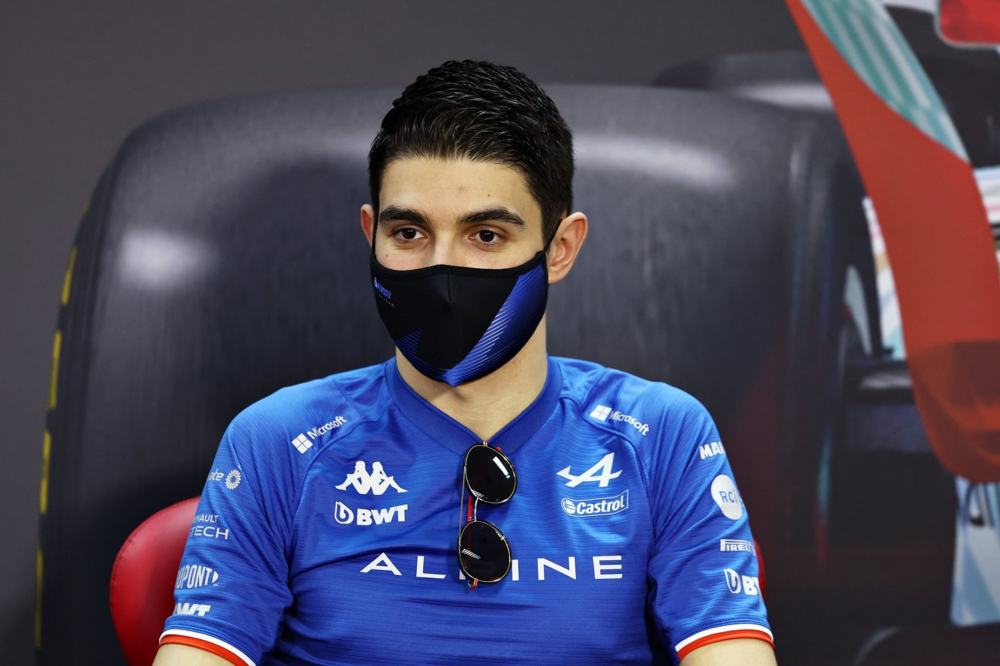
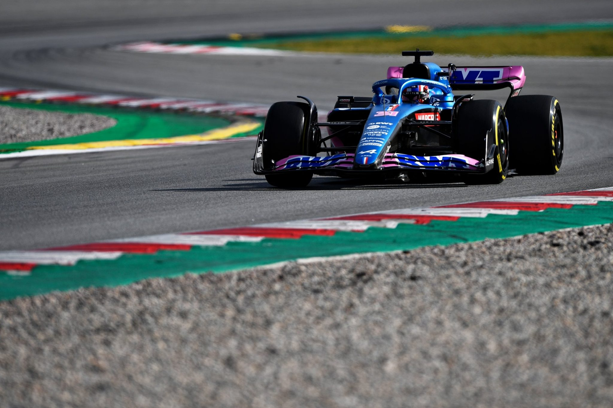
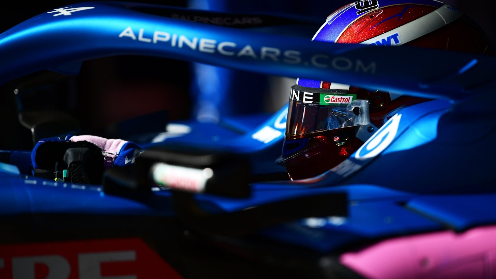
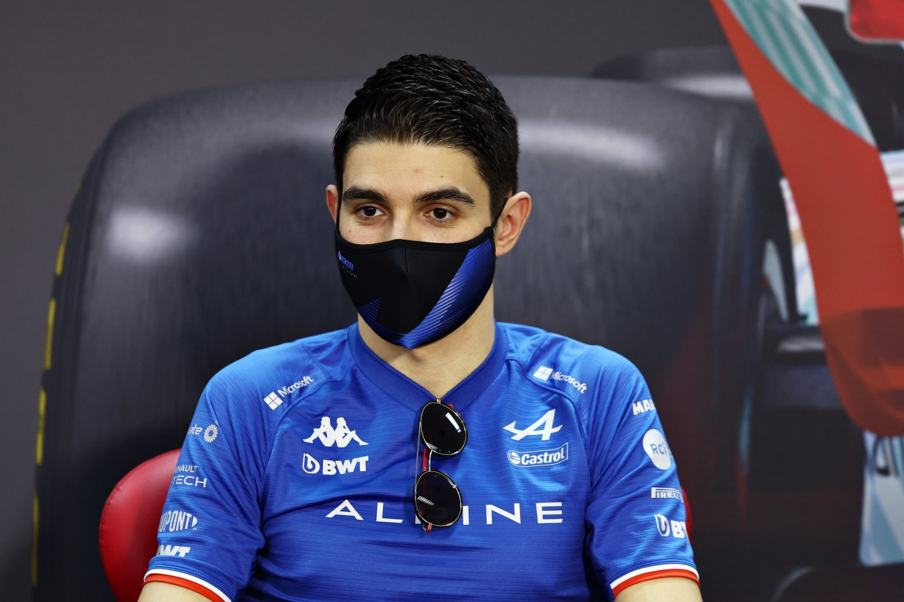
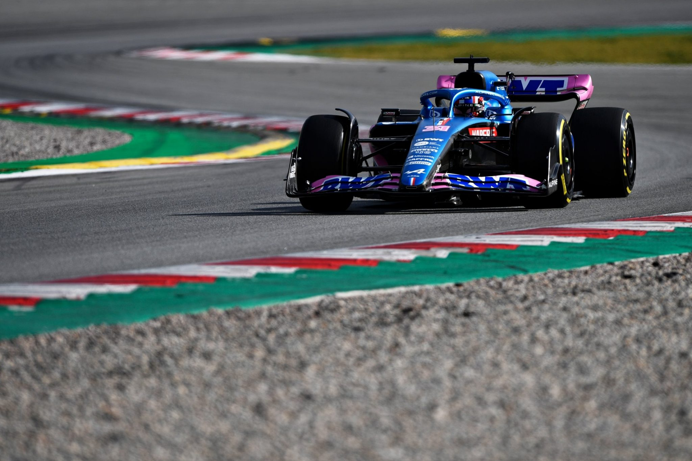
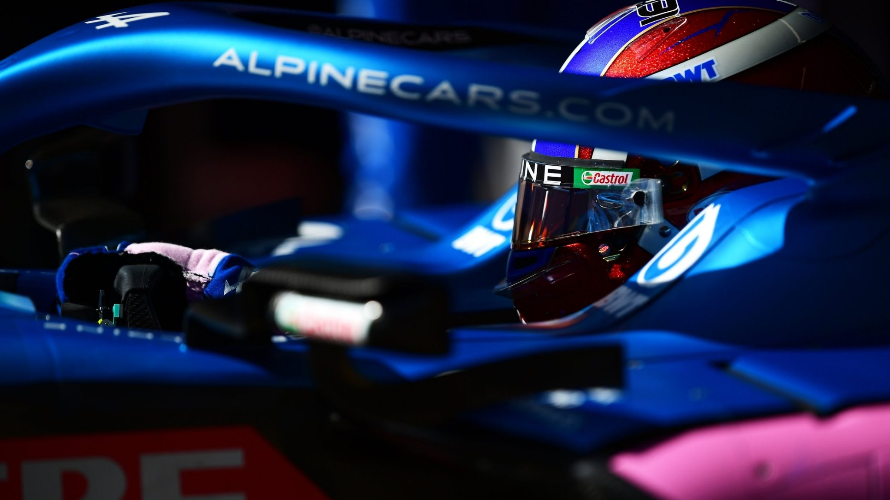

If there’s one word that dominates Esteban Ocon’s career, it’s ‘sacrifice’.
Back when he was just a promising karter, Ocon’s parents sold their house, put their jobs on hold,
and began a life on the road, living in a caravan and travelling from circuit to circuit to support their son’s burgeoning career.
Sacrifice, see – but it worked. 2014 saw Ocon break through in the world of single-seaters,
as he beat a certain Max Verstappen to the European F3 title. Backed by Mercedes,
he won the GP3 title the following year and was halfway through a season of DTM in 2016
when he was offered the chance to replace Rio Haryanto at the minnow Manor team from the Belgian Grand Prix onwards.
That opportunity led to a full-time seat the following year with Force India,
where his wheel-to-wheel duels with highly-rated team mate Sergio Perez quickly marked him out as a rising star.
But when Lawrence Stroll, father of racer Lance, stepped in midway through 2018 to secure the squad’s financial future,
the writing was on the wall for Ocon, who was moved aside at the end of the year to allow Stroll Jnr to join from Williams.
Ocon bided his time, though, and after a year on the sidelines as Mercedes’ reserve driver,
he found his way back into a race seat for 2020 with Renault, who became Alpine for 2021 – when his wait finally paid off,
as he scored his – and the famous French marque’s – first F1 win.
Nothing in Ocon’s motorsport career has come easy – but if Ocon has managed to return to the F1 grid and step atop the podium,
it’s through a combination of self-belief, determination and a talent that’s up there with the very best.
  
| Team | Alpine |
|---|---|
| Country | France |
| Podiums | 2 |
| Points | 354 |
| Grand Prix entered | 109 |
| World Championships | N/A |
| Highest race finish | 1 (x1) |
| Highest grid position | 3 |
| Date of birth | 17/09/1996 |
| Place of birth | Évreux, Normandy |
Biography
If there’s one word that dominates Esteban Ocon’s career, it’s ‘sacrifice’.
Back when he was just a promising karter, Ocon’s parents sold their house, put their jobs on hold,
and began a life on the road, living in a caravan and travelling from circuit to circuit to support their son’s burgeoning career.
Sacrifice, see – but it worked. 2014 saw Ocon break through in the world of single-seaters,
as he beat a certain Max Verstappen to the European F3 title. Backed by Mercedes,
he won the GP3 title the following year and was halfway through a season of DTM in 2016
when he was offered the chance to replace Rio Haryanto at the minnow Manor team from the Belgian Grand Prix onwards.
That opportunity led to a full-time seat the following year with Force India,
where his wheel-to-wheel duels with highly-rated team mate Sergio Perez quickly marked him out as a rising star.
But when Lawrence Stroll, father of racer Lance, stepped in midway through 2018 to secure the squad’s financial future,
the writing was on the wall for Ocon, who was moved aside at the end of the year to allow Stroll Jnr to join from Williams.
Ocon bided his time, though, and after a year on the sidelines as Mercedes’ reserve driver,
he found his way back into a race seat for 2020 with Renault, who became Alpine for 2021 – when his wait finally paid off,
as he scored his – and the famous French marque’s – first F1 win.
Nothing in Ocon’s motorsport career has come easy – but if Ocon has managed to return to the F1 grid and step atop the podium,
it’s through a combination of self-belief, determination and a talent that’s up there with the very best.
Gallery
  